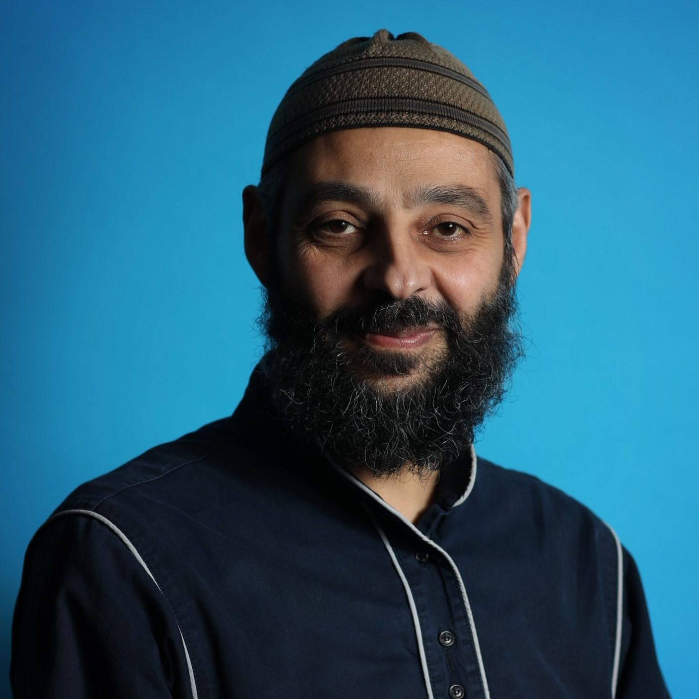

Home
My name is Aamir Khan, and this is my personal website. I am currently a computer science student at Riverside City College, and I love everything about computer science. I find programming to be a relaxing activity and one that I love to explore through solving different problems and projects. I am a huge coffee lover, so the way to my heart is through a good cup of coffee. I'll take a good cup of coffee over lunch any day. I love spending time with family and eating great food together. Moving on to why I've made this personal site, I would love to use my knowledge of HTML to share some information about myself and put myself out into the world. In my personal website, I intend to introduce myself to my audience in a detailed manner, such as through my resume, favorite links, and even some information about destinations I've traveled to.
My Interests and Hobbies:
- Spending time with family
- Learning about Islam
- Eating desserts and drinking coffee
- Reading books and manga
- Playing games
- Watching movies
My Family's Mindset:
I come from a family-oriented household that places a lot of emphasis on prioritizing family before others. As a result, I take pride in being able to stay close with my family and spend valuable time with them. Whenever I want to do something fun, I always have family in mind to share that experience with. I believe this is one of my most valuable blessings because I can't even begin to think how my life would be without my family. Had it not been for the support of my mom, dad, and siblings, I wouldn't stand where I am today. We all look out for each other and have the best in mind for each other. We share both good times and bad times, but we always get through these times together. I urge everyone to keep in touch with their family and call them to tell them you love them. It's better late than never!
Trivia Items:
- I'm obsessed with coffee.
- I'm a huge Nintendo fan.
- I can't live without boba.
- I'm clueless a lot of times.
- I get tired from programming too often.
My Role Model:
I chose this picture of Ustadh Hassan Elwan because he is truly a role model I aspire to be like. From his calm and respectful demeanor to the knowledge he possesses about Islam, I look up to him for the knowledge he has shared with the Muslim community at large. Despite having so much responsibilities, I always find him smiling and content with his life and blessings. He has taught me a lot about how to be thankful for my blessings, and he has also taught me about just how important it is to have a strong connection with my Creator and Lord. A trait of his that I admire is his ability to have fun and laugh even with the demanding work that he has to engage in as he serves the Muslim community. These are a few of the many reasons I chose Ustadh Hassan Elwan as my role model.